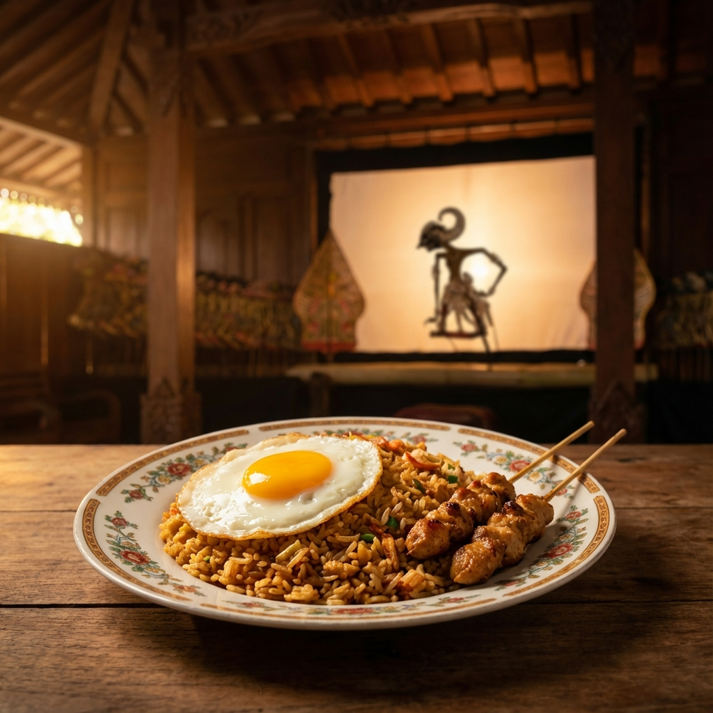
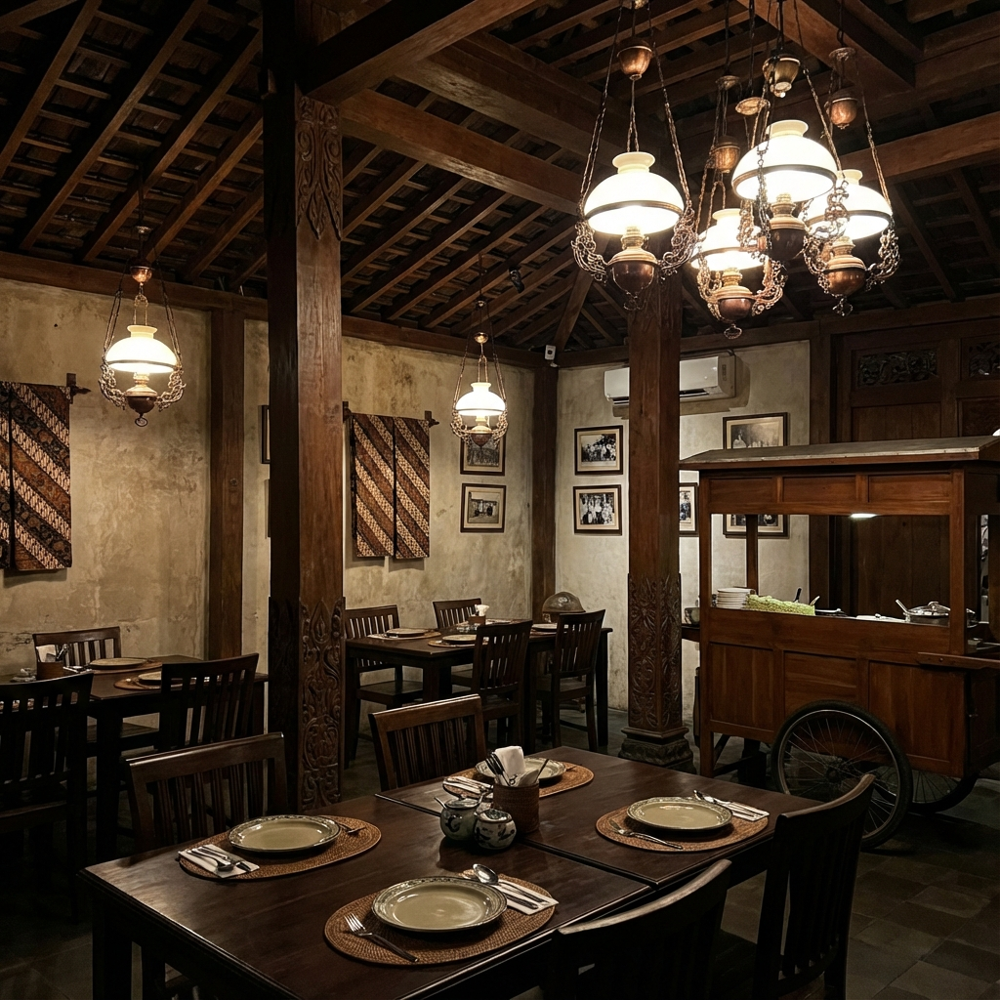

Nasi Goreng Ruwatan
Rp 25.000
Nasi goreng dengan bumbu rempah hitam kluwek, disajikan dengan ayam suwir.
Nikmati Nasi Goreng autentik dengan suasana wayang yang syahdu.
Lihat Menu
Bermula dari resep turun temurun Eyang Putri, Warung Nasi Goreng Wayang menghadirkan rasa yang tak lekang oleh waktu. Kami memadukan bumbu rempah pilihan dengan teknik memasak tradisional menggunakan anglo arang.
Filosofi kami sederhana: Masak dengan hati, sajikan dengan janji.

Aroma 'smokey' khas yang tidak bisa didapat dari kompor gas.
Menggunakan beras pera berkualitas tinggi, pas untuk nasi goreng.
Makan ditemani alunan gamelan lamat-lamat yang menenangkan.
"Seperti Gunungan dalam wayang yang melambangkan isi alam semesta,
sepiring nasi goreng kami menyatukan berbagai rasa menjadi satu
harmoni."
"Rasanya membawa saya kembali ke masa kecil di Solo. Autentik!"
"Tempat paling asik buat nongkrong sambil menikmati budaya."
Tersembunyi di sudut kota yang tenang, jauh dari hiruk pikuk.
Jl. Gatot Kaca No. 12,